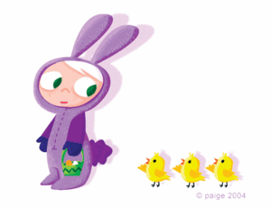

It's been a busy week here at Wubby Central.
First we get a Line Producer and now we are pleased to announce that the lovely and extremely talented Paige Pooler will be joining us as a Character Designer!
Please treat your eyes to a yummy visual feast at her website:
http://www.paigepooler.com/
(be sure to check out the really cool snapshot section!)
And as is now the custom here at the Wubblog, here is a bio that I guilted Paige into writing:
Paige Pooler loves tacos, chocolate, and bacon. A lot. She thinks Gardenias smell very pretty and they remind her of her beloved Grandmother. She loves long walks on the beach...Hey wait a minute! This was supposed to be for that OTHER bio.
REALLY, Paige is a native Californian, boasting a Bay Area childhood and an authentic OC teen-hood before striking out for Los Angeles. Although she'd always been an incessant doodler, Paige never imagined she'd make a living doing just that. Some years into college, she stumbled onto the major, "BFA in Illustration," and she was saved! She tossed out all her French language books and embraced her pencils...the moment she was done with her study abroad, of course (she was enlightened, not crazy!).
When Paige arrived in LA to work on a feature film as an Art Department Production Assistant, she earned her keep by sharpening pencils and buying lattes for the seasoned artists. Later she hung out on set and got lunches for the actors. As fun as all THAT was, she knew she needed to get her feet wet with an artist job herself and landed a gig at Disney Interactive in the early days of 16-bit pixel clean-up. She subsequently joined Jim Henson Interactive as an art director before throwing caution to the wind and becoming a full-time freelancer. Even though freelance has, occasionally, been lean, Paige has randomly done everything from movie prop sketchbooks, newspaper ads, concept video-game art, animated series proposals, and character design. And although Court TV can be tempting to someone working at home, Paige never stopped doodling, knowing ONE DAY...she'd really get to put those skills to the test.
That time has come and Paige is VERY EXCITED to join the Wubteam!!!
*She normally does not refer to herself in 3rd person.
